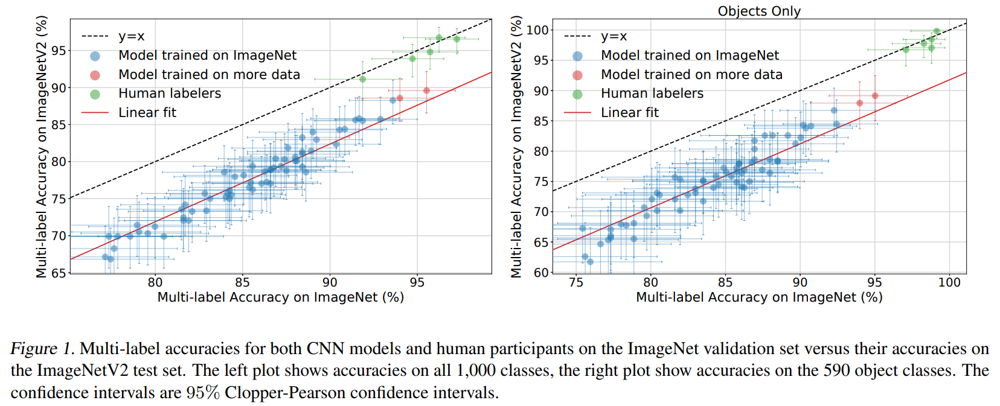
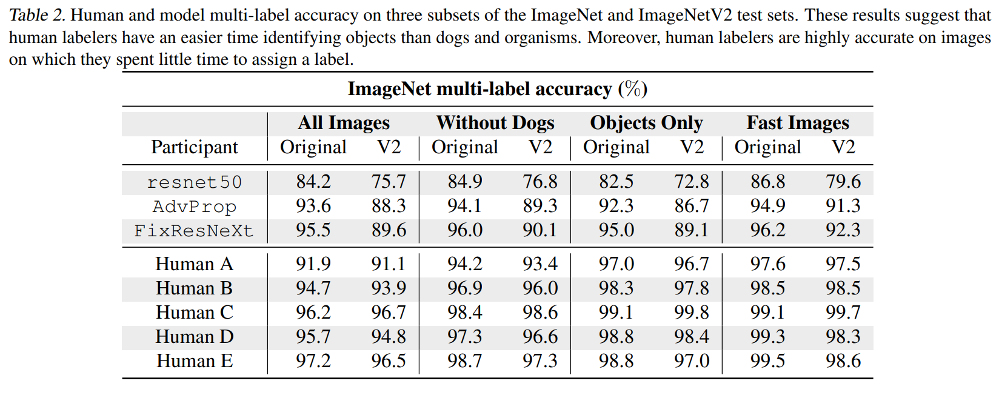

Citation
You can download the original paper and source of all images here.
Shankar, V., Roelofs, R., Mania, H., Fang, A., Recht, B. & Schmidt, L.. (2020). Evaluating Machine Accuracy on ImageNet. Proceedings of the 37th International Conference on Machine Learning in Proceedings of Machine Learning Research, 119:8634-8644.
Introduction
The paper assesses machine classification accuracy on the ImageNet and ImageNetV2 datasets by comparing with trained human labelers. The study created a new dataset with a total of ~40,000 images and 1,000 classes, taken from the two original datasets. The differences in human vs machine performance on ImageNet and ImageNetV2, about 4% and 11% respectively, are enough for researchers in the field to acknowledge much more work is left to be done. But for people on the outside or who are new to the field, it can be hard to believe models are effective enough that comparing to human performance even makes sense.In case you are not familiar I’ll use this paragraph to describe the ImageNet and ImageNetV2 datasets; feel free to move on if you have experience with them already. The largest ImageNet dataset, created in 2009, consists of over 14 million images and 21,000 classes. A smaller subset of around 1.2 million images and 1,000 classes is commonly used for benchmarking model performance in image classification. ImageNetV2 was created in 2019 and is a more challenging dataset. While addressing some limitations of the original dataset, such as label biases and image quality, it added more images with occlusions, different lighting conditions, and unusual poses to further challenge classification models.
Current state-of-the-art models correctly classify images in ImageNet about 90% of the time. This paper analyses differences between machine and human performance to learn how to better improve models moving forward.
Factors at Play
There are different methods of scoring when considering classification accuracy – common measures are the Top-1 and Top-5 scores. These take the top X classifications in terms of probability for any image and look to see if the correct classification is contained in them. However due to the nature of the images, there is often more than one valid label for a given image. This leads to the Top-1 score typically being overly pessimistic.A model is also impacted by the quality of the labeling – images labeled inaccurately will be improperly scored when evaluating a model’s classification. In this study, humans used strict guidelines to re-assign labels to each of the 40,000 images in the subset of the dataset to ensure labeling was as accurate as possible. One interesting finding from this work – the Top-1 scores were directly correlated to the multi-label accuracy of the images!
Human vs Machine Performance
The comparison between human and machine performance allows the authors to better understand how machines make mistakes, which will direct future efforts for improving model performance. The below plot demonstrates important differences:  On all classes and on ImageNet alone, the performance is quite similar between the best models and the human labelers. When looking at the ImageNetV2 performance for all classes, there is a clear difference between human and machine performance. However this difference becomes much more evident when looking at inanimate classes only, with human labelers being in a tight cluster around 99% with the best models scoring under 95% and 89% for ImageNet and ImageNetV2, respectively. Further, the researchers found significant differences in performance for models between ImageNet and ImageNetV2 but found no such differences for humans!Proposals for Future Research
The above findings led to three proposals by the authors for future image classification research:- Measure performance via multi-label accuracy, since it is more reflective of true performance in the ImageNet classification task and Top-1 accuracy is biased towards label quality.
- Separate performance on inanimate object classes vs highly-specific classes (like dog breeds), since inanimate objects are influenced less by label quality and accuracy.
- Measure performance of models across different dataset distributions, such as between ImageNet and ImageNetV2, allowing the focus to move toward developing more robust models.
The Experiment
There were four main steps to the experiment – creating multi-label annotations for over half of the images, training human labelers using the remaining unlabeled images from ImageNet, evaluating human labeler performance using class-balanced random samples (half ImageNet, half ImageNetV2), and then reviewing any additional annotations that arose from the evaluation process in the last step. Why is each step so important?Multi-Label Annotations
As previously discussed, classifications of many images in the datasets cannot be properly evaluated using only one label. For example, an image of a person working at a desk could get many classifications – human, desk, computer, keyboard, mouse, etc. If the best label for the image is ‘desk’, but the machine returns human as its best guess (and maybe desk is the second choice), then it is wrong by a Top-1 metric but correct in a logical sense – there IS a human in the image! The Top-5 metric considers a classification to be correct if the best choice is somewhere in the model’s top five guesses, leading to a new issues: what if there are only five (or fewer) realistic options for a specific class? For example, there are only five possible turtle breeds in the set of classes and so for any turtle image if the model simply returns all five breeds, it will always be correct.Three solutions were created to account for these issues. First, any image with multiple objects/animals was given a separate label for each entity. This way a model classifying an image with a desk, human, keyboard, computer, and mouse would be correct if it guessed any of these labels. Second, images with labels having synonymous classes in the class list would also be assigned these synonym classes. The class ‘tusker’ is considered an animal with visible tusks, and so any image with ‘tusker’ label would also be assigned a label of ‘warthog’, ‘African elephant’, and ‘Indian elephant’, as these match the definition. Third, images whose labels could not be clearly determined as accurate were not considered.
Human Labeler Training
An initial study from 2015 found three main reasons for human inaccuracies – fine-grained class distinctions, unawareness of classes, and insufficient training images.To help with distinguishing classes, a specific task for training humans on a variety of similar species was created. Labelers identified images they needed more practice with, got immediate feedback on their classifications, reviewed their answers as a group, and wrote a labeling guide for distinguishing between classes. The researchers even brought in external help via a member of a nearby kennel club for support in identifying different dog breeds!
To improve the awareness of all the classes, a user interface was created for the humans to search across the ImageNet class options. This removed the necessity (and difficulty) of needing to recall every class option throughout the experiment.
Lastly, researchers provided almost 10x the training images for each class type compared to the aforementioned 2015 study, leading to an improvement in labeling performance of the humans.
Human Performance
1,000 images from the ImageNet validation set and 1,000 images from ImageNetV2 were combined to create the test sets for evaluating human performance. The test set was sampled from each dataset in a class-balanced manner, so every class had an equal distribution of images in the set. Participants classified every image in the dataset and only had access to the labeling guide they created and a training set for each class. The median time to complete the task was a whopping 36 hours for the 2,000 images!Post-Performance Review
When creating the original multi-labels for each image, the authors used a large set of individual classifications created by models. If no model, or a small enough number, had a certain classification for an image then it would not be present in its set of labels. Since human labelers may lead to image classifications that no model was able to pick up, that does not mean they were wrong! This led to a required post-performance annotation session to add any additional labels to the multi-label set for each image to ensure labels by humans that should have been correct were not marked as inaccurate due to model errors. To avoid bias in this process, no labeler reviewed their own predictions and model labels were randomly included in the list of human labels to review. Over 65% of the images had no changes, 25% received new labels, and under 15% had their labels changed.Main Results
The essential results stem from comparing models and humans in two areas; accuracy and robustness.As previously discussed, human labelers performed significantly better than the best model on both ImageNet and ImageNetV2. Critically the two participants who did not annotate prior to the evaluation (D and E) scored just as high as those who did, indicating performance was not influenced by image annotation. You can see the accuracy scores broken down by segment, dataset, and participant below. Statistically significant differences also exist between model performance on ImageNet vs ImageNetV2 and human performance on the whole dataset vs objects only.  The specific areas in which humans and machines make mistakes is valuable for improving future model performance. All human participants failed to classify ten images – one monkey and nine dog pictures – further supporting the difficulty of these fine-grained distinctions for humans. On the other hand, all 72 models considered failed on 27 images consisting of over two-thirds object classes and the rest organism classes. The performance gap in object vs organism classes is an interesting area to explore moving forward.
Conclusion
The paper concludes by making three more suggestions for future research: addressing the current lack of model robustness to distribution shifts, exploring the robustness of untrained human performance for comparison, and studying the types of distributions most affecting model performance. If the goal of building models is to eventually exceed human performance, we will progress faster by finding and explaining existing gaps in smaller domains (i.e., dog breeds) than looking solely at the accuracy score.Although the paper is focused on identifying areas to improve, I am left admiring the current level of model performance in image classification. In my perspective it is a question of when, not if, models will surpass human performance – for image classification and many other tasks.